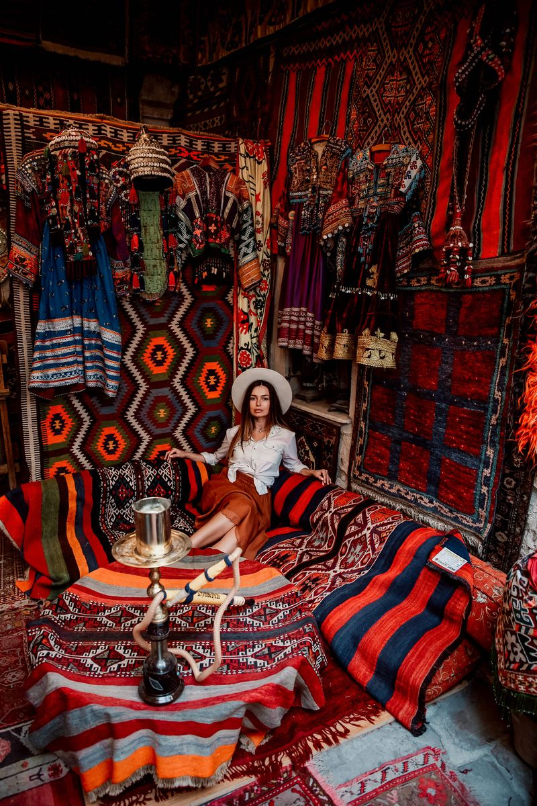

Capadocia en invierno: nieve, menos globos, mejores fotos

«¿No está cerrada Capadocia en invierno?» Escuchamos alguna versión de esta pregunta cada diciembre, normalmente de alguien que ya ha encontrado un vuelo barato para enero y busca una razón para reservar la sesión de todos modos. No está cerrada, ni mucho menos. Los valles están abiertos todos los días del año, los hoteles cueva siguen calentitos, y algunas de las fotografías más tranquilas y potentes que hacemos en todo el año salen de mañanas de enero y febrero. El invierno es simplemente otra Capadocia, y recompensa a quien llega preparado para lo que realmente es, no para lo que muestran los folletos de verano.
Cómo es realmente el invierno aquí
La temporada baja va, en serio, de diciembre a febrero, con finales de noviembre y principios de marzo como una transición más suave. Las temperaturas diurnas suelen moverse entre 2°C y 10°C; la hora antes del amanecer es más fría, a menudo cerca de cero, y una sesión realmente pide un abrigo de verdad en lugar de las capas ligeras que funcionan en junio. No nieva todas las semanas —la mayoría de los inviernos traen varias nevadas reales en lugar de un manto blanco continuo—, pero cuando se posa sobre las chimeneas de hadas y el fondo del valle, a esta altitud suele aguantar varios días antes de derretirse, y en esa ventana salen fotografías que no se parecen a nada más del calendario. La niebla también es más habitual en esta época, deslizándose baja por los valles con la primera luz y disipándose normalmente en una hora: queda preciosa en foto y suele aparecer sin avisar.
Los globos, con honestidad
Los vuelos en globo dependen del viento y la visibilidad en cualquier estación, y el invierno simplemente tiene más mañanas en las que las condiciones no lo permiten: vuelan menos operadores, y los que lo hacen a veces cancelan con poco aviso. Hay mañanas de invierno completamente despejadas en las que el cielo se llena de globos igual que en julio; hay otras sin ninguno durante varios días seguidos. Nunca te prometeremos un número concreto de globos en una fecha concreta, en invierno o en cualquier otra época: nadie que fotografíe aquí controla el viento. Lo que sí te prometemos es revisar la previsión contigo la noche anterior y planear los miradores según lo que esa mañana en concreto vaya a ofrecer de verdad. En las mañanas sin globos, los valles bajo nieve o nubes bajas sostienen la sesión por sí solos: la mayoría de nuestros huéspedes de invierno nos dicen después que echaron de menos los globos mucho menos de lo que esperaban.
Por qué la luz de invierno suele jugar a tu favor
El sol se mantiene más bajo en el cielo durante todo el invierno en Capadocia, no solo al amanecer y al atardecer, así que la luz suave y direccional que en verano perseguimos durante treinta o cuarenta minutos puede durar casi una hora. El amanecer también llega más tarde —a menudo pasadas las 07:00 en lugar de antes de las 05:00—, así que una sesión de invierno no exige el mismo madrugón que una de julio. Los valles en sí están casi vacíos: los autobuses turísticos que llenan el Valle del Amor y los miradores de Uçhisar a media mañana en temporada alta prácticamente dejan de venir en invierno, lo que significa más tiempo en cada punto y muchos menos desconocidos entrando en el fondo de tus fotos.
Vestirse para el frío sin perder el estilo
Los vestidos largos, los abrigos e incluso las pieles quedan preciosos contra la roca desnuda y una capa fina de nieve, y una capa de abrigo debajo no es diferente de la que se esconde bajo un vestido de verano: simplemente no se ve en la foto. Traemos nuestros propios vestidos voladores y props exclusivos sin importar la estación, y los cambios de vestuario siguen siendo ilimitados, así que un abrigo más grueso para caminar entre puntos y un look más ligero para la foto en sí funcionan muy bien juntos. Te enviamos una guía de estilo completa después de reservar, adaptada al mes en que viajes.
Cuando la nieve o la lluvia se imponen
En las mañanas en que el tiempo realmente no coopera —lluvia fuerte, niebla espesa que no se levanta, o nieve demasiado profunda para caminar los senderos del valle con seguridad— trasladamos la sesión bajo techo. Una tienda de alfombras centenaria iluminada por farolillos de mosaico resulta, si acaso, más atmosférica en invierno que en verano, y es una de las pocas escenas de Capadocia que queda igual de bien sea cual sea el tiempo fuera. La terraza de un hotel cueva es otra opción en un día de clima más suave: un desayuno con globos o copos de nieve pasando de fondo, fotografiado justo donde te alojas.
Una semana de invierno realista
| Cuándo | Mañana típica | Qué esperar |
|---|---|---|
| Inicio dic. / final marzo | 5–10°C, nieve poco probable | Más cerca de temporada media — menos gente, globos casi todas las mañanas despejadas |
| Mediados dic. – mediados ene. | 0–5°C, nieve ocasional | Valles tranquilos, posibilidad real de una capa ligera sobre las rocas |
| Finales ene. – febrero | -2 a 4°C, mejores opciones de nieve | Las mañanas más frías y silenciosas — y la mejor opción para una sesión con nieve de verdad |
Entonces, ¿merece la pena?
Si quieres un número concreto de globos y un amanecer cálido en camiseta, el invierno no es tu temporada: mejor reserva en abril o septiembre. Pero si quieres valles casi sin nadie más, luz que aguanta una hora en vez de veinte minutos, y la posibilidad —nunca la certeza— de despertar con nieve sobre las chimeneas de hadas, la Capadocia de invierno fotografía como ningún otro momento en el que trabajamos. Algunas de las fotos que nuestros huéspedes han impreso más grandes salieron de mañanas grises de enero que nadie habría elegido de un folleto.
¿Tienes curiosidad por lo que incluye una sesión de invierno? Echa un vistazo a nuestra página de paquetes.